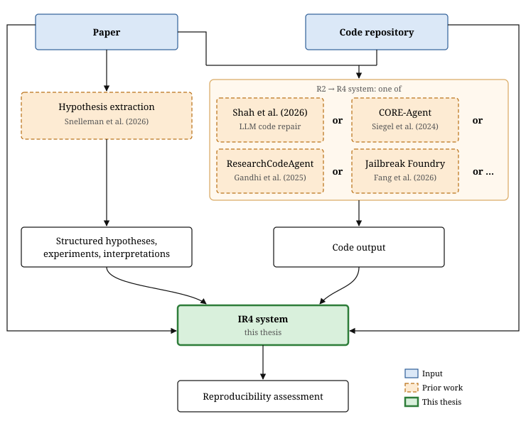

Automatic Reproducibility Assessment
Andreas Moe
2026
Plan
Project must be done within 20 weeks
Dataset curation
Decide on which papers I wish to test the system on. - 1 week
Dataset preprocessing
- Matching papers and code repos - 1 day
- Structured metadata - 1 day
Architecture of the system
- Reproducible environment - 1 week
- Hardware requirements - 1 day
- Artifact format - 1 week
- LLM logs - 1 day
- Model choice - 1 day
Prompt engineering
1 week
Cloud infra
I've never done this before. Big uncertainty - at least 2 weeks
Proof of concept run
Can be done on a PC - 1 week
Manual verification
Check manually if the repairs are correct - 2 weeks
Full run
Set aside 8 weeks
Writeup
Done in parallell with the full run - 10 weeks
Introduction
Background
Method

Use of AI tools
Results
Conclusion